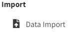
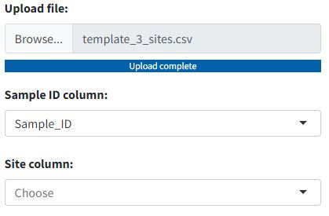
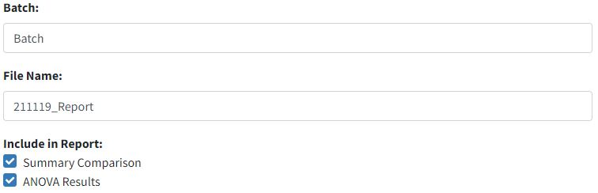

Precision provides an estimate of total method variability and is usually expressed as the variance, standard deviation or relative standard deviation (coefficient of variation) of a series of measurements. Precision should be investigated using homogenous, authentic samples or an analyte of known purity/potency.
Repeatability (short-term variability) includes, in addition to the system precision, the contribution from the sample preparation (e.g. weighing, extraction, dilution) and data evaluation. It is therefore essential to apply the whole analytical procedure.
Intermediate precision includes the influence of additional random effects according to the intended use of the procedure in the same laboratory and can be regarded as an initial estimate for the long-term variability of the analytical procedure.
Intermediate precision is calculated from the overall variance, i.e. the sum of variances within and between the series. The contribution of each source (within day, day-to-day and analyst-to-analyst) to the overall variability is reported in the downloadable report. Repeatability is represented by the within day variability.


